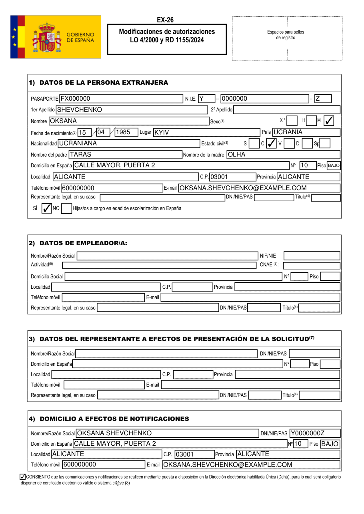
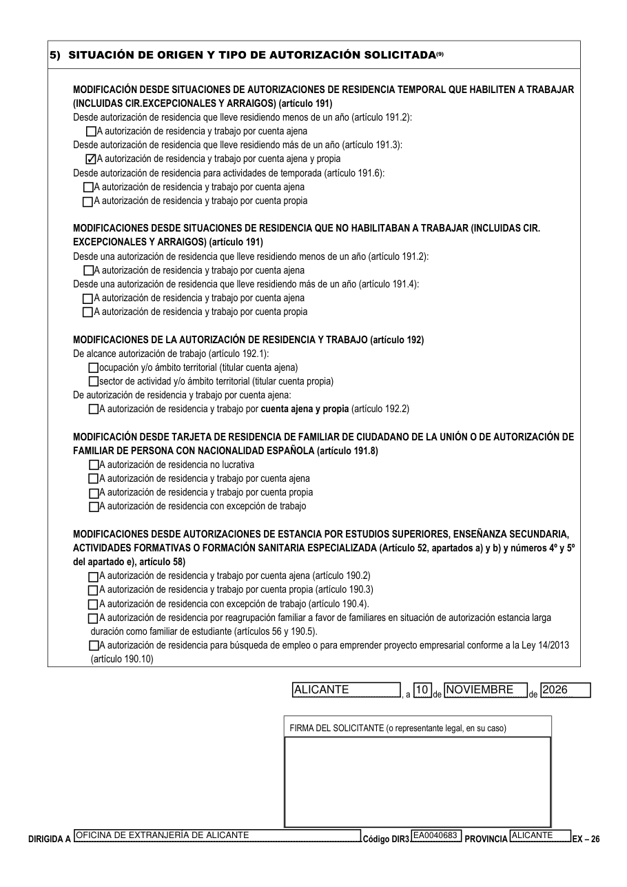
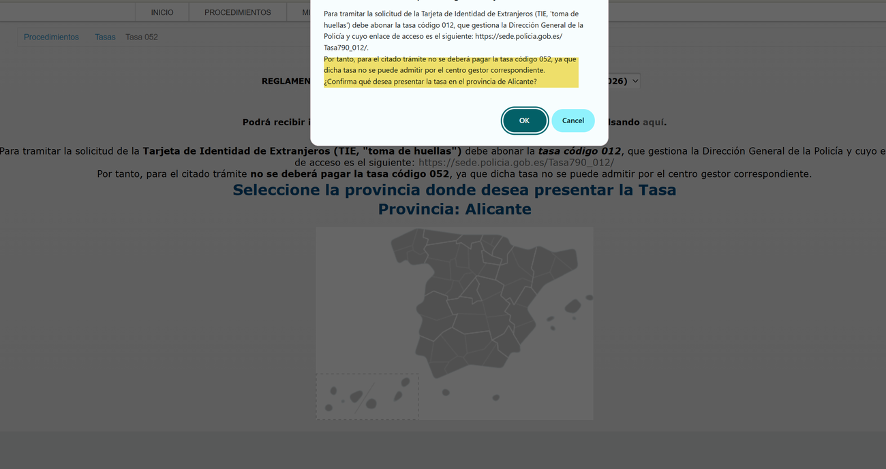
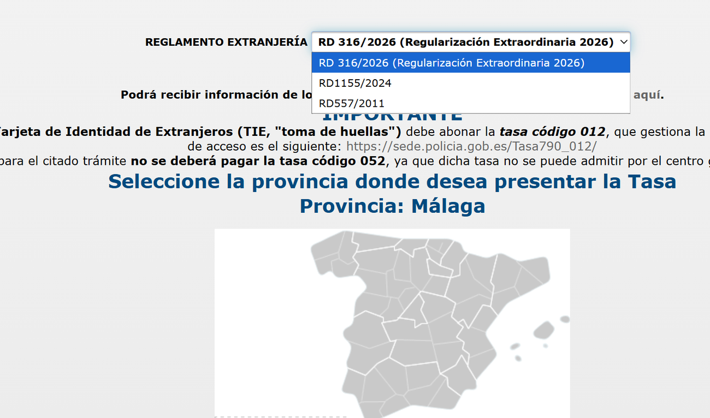
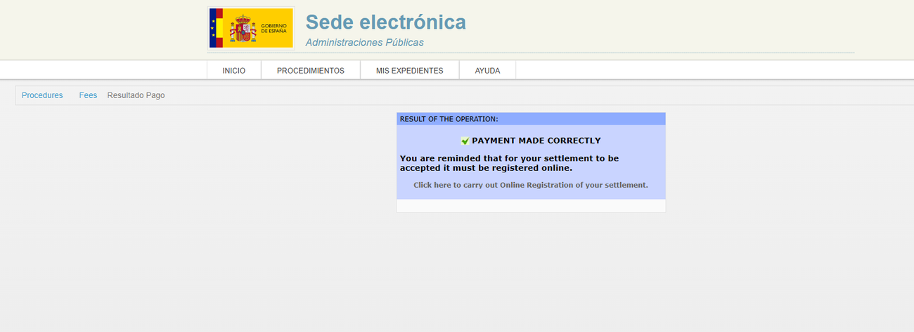
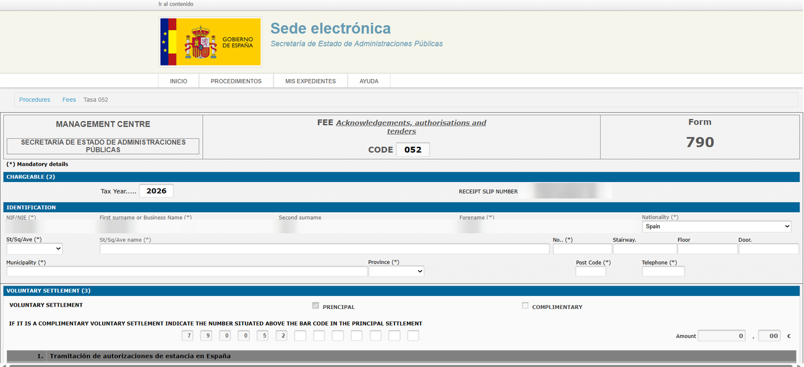
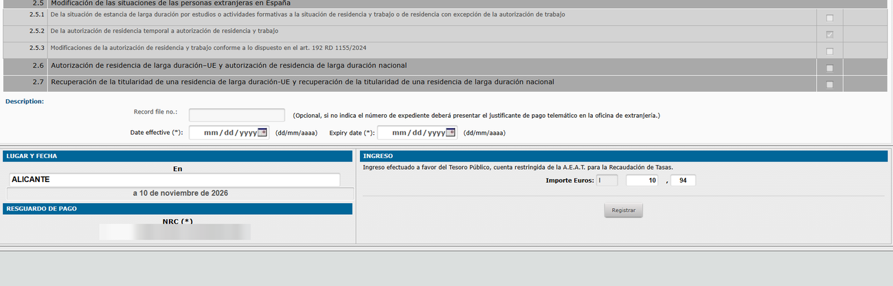
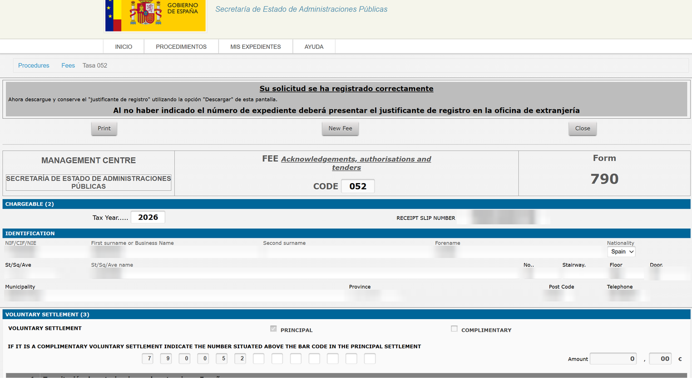

Крок 1 з 2. Підготовка документів для подачі через Mercurio
EX-26, ст. 191.3 RD 1155/2024Cuenta propia (+ примітки для cuenta ajena)Перевірено на реальній подачі, листопад 2026
Що це за сторінка. Інструкцію написано за реальною подачею, яку ми пройшли крок за кроком у листопаді 2026 року (Аліканте, autónoma, перехід із тимчасового захисту). Тут зібрано відповіді на всі питання, що виникали в процесі. Це не юридична консультація: правила і сайти міністерства змінюються, тож звіряйте деталі з офіційними джерелами. Друга частина — Крок 2: подача через Mercurio.
Наш приклад — Оксана Шевченко (усі дані вигадані). Живе в Аліканте з 2022 року за тимчасовим захистом. З 01.09.2022 — autónoma (тестування програмного забезпечення), працює з дому на одного клієнта — естонську компанію ACME Solutions OÜ, щомісяця виставляє фактуру. Заміжня, син Марко, 13 років, ходить до школи (у сина прізвище Коваленко — інше, ніж у мами). Хоче перейти на residencia y trabajo por cuenta propia на 4 роки (ст. 191.3).
Ці обмеження ставить сама платформа Mercurio (вони написані на сторінці завантаження і в офіційному посібнику користувача). Якщо файл їм не відповідає, ви дізнаєтеся про це вже посеред подачі.
Правило
Що це означає на практиці
Формат: pdf, jpg, tif, gif
Робіть усе в PDF. Zip не приймається — якщо податкові моделі чи фактури у вас в архіві, розпакуйте й зберіть у PDF.
До 6 МБ на один файл
Скан паспорта на 18 розворотів із кольоровими сторінками важить близько 4 МБ — це нормально. Якщо файл більший, відскануйте з роздільністю 150–200 dpi. Не стискайте файли з електронним підписом (договір, підписана меморія тощо) — стиснення ламає підпис. Якщо підписаний файл великий, пошукайте оригінал: роздрукований і відсканований договір у нас важив 12 МБ, а оригінальний PDF із сервісу підпису — 2 МБ.
Без кирилиці і без «чужих» літер. Наприклад, ACME Solutions OÜ_contract.pdf — не пройде через Ü; перейменуйте на Contrato_ACME_15.pdf. Перейменування не ламає електронний підпис.
Один документ — один файл
Кожен «обов'язковий» тип документа в Mercurio приймає лише один файл, усе інше йде як «Otros documentos» (детально — у Кроці 2). Тому не треба нічого склеювати.
Не об'єднуйте підписані PDF
Склеєний файл втрачає підписи всіх частин, а розмір легко перевищить 6 МБ.
Порада. Складіть усе в одну папку. Підписані версії називайте з суфіксом _signed, а непідписані чернетки після підписання видаліть або перенесіть в іншу папку — так у Mercurio не завантажиться випадково не той файл.
2. Перелік документів
Офіційна база — Hoja informativa 55 міністерства та ст. 86 і 191.3 RD 1155/2024. Для пункту 191.3 і cuenta propia закон вимагає довести, що ви продовжуєте діяльність і виконуєте податкові обов'язки та обов'язки перед Seguridad Social, плюс довідку про навчання дітей шкільного віку. Нижче — що саме подала Оксана і навіщо.
Mercurio сам формує EX-26 з ваших онлайн-відповідей, тож окремий бланк — додатковий, але корисний (див. розділ 3).
3
Паспорт — усі сторінки
Скан
Усі розвороти, включно з порожніми, одним PDF. Паспорт має бути чинним.
4
Картка ТЗ (TIE) з обох боків
Скан
Якщо на картці стара адреса — не страшно, в усіх формах пишіть адресу з падрону.
5
Certificado de empadronamiento
Ajuntament (онлайн або в офісі)
Свіжий (не старший за 3 місяці). Адреса в падроні має збігатися з адресою в AEAT і Seguridad Social — якщо ви переїжджали, спершу оновіть адресу там (в AEAT — через «Mis datos censales» / модель 036).
Діє 3 місяці. Офіс може перевірити сам, якщо ви не заборонили (див. Крок 2), але з довідкою надійніше.
17
Довідка про навчання дітей 6–16 років
Школа (certificado de matrícula)
Ст. 86.3: обов'язкова, якщо діти в віці обов'язкової освіти. Підходить довідка від самої школи з підписом директора. Якщо прізвище дитини інше, ніж у вас, — напишіть в índice, що це ваша дитина.
Переклад договору — як зробили ми. Офіційне правило (Hoja 55) — переклад присяжним перекладачем (список). Оксана обрала інший варіант: разом із клієнтом підписала додаткову угоду (adenda) двома мовами, до якої як додаток увійшов повний іспанський текст договору. Так іспанська версія стала частиною самого договору. Це не присяжний переклад, тож офіс може попросити його окремо (на це дадуть строк). Якщо хочете без ризику — замовляйте присяжний переклад.
Чого не треба (і чому)
Certificado al corriente (AEAT і Seguridad Social) — офіс перевіряє сам, якщо ви не поставите галочку «NO CONSIENTO» у Mercurio (ст. 86.5).
Банківські виписки — у Hoja 55 для цього пункту їх немає; доходи видно з фактур і податкових моделей.
Розрахунок IPREM — ст. 86 не ставить для cuenta propia вимоги щодо IPREM.
Свідоцтво про народження дитини — для вашої заяви потрібна лише довідка про навчання. Свідоцтво знадобиться для окремої заяви самої дитини (сторінка «Діти»).
Медичне страхування — як autónomo ви вже застраховані через RETA.
замість меморії, договору з клієнтом і податкових моделей подаються трудовий договір, підписаний вами і роботодавцем, vida laboral і, за бажанням, останні nóminas. Вимоги до договору та інші варіанти (безробіття, 9 місяців роботи з 12 тощо) — на сторінці «Трудовий контракт». Довідка про навчання дітей потрібна так само.
3. Бланк EX-26: що в яке поле
Чи обов'язковий окремий бланк? Ні: у Mercurio ви заповнюєте ті самі дані онлайн, і система сама генерує EX-26. Але заповнити бланк заздалегідь варто: (1) це готова «шпаргалка» для онлайн-форми, (2) підписаний бланк можна додати як «Otros documentos», і в ньому буде повна адреса — онлайн-форма в нашому випадку «з'їла» номер дверей.
Беріть актуальний бланк (у листопаді 2026 міністерство оновило текст: у пункті 191.3 тепер «más de un año» замість «al menos un año»).
Заповнюйте в Adobe Acrobat Reader: браузер іноді не зберігає введене.
ВЕЛИКИМИ ЛІТЕРАМИ, дати — дд/мм/рррр, ім'я та прізвище латиницею точно як у паспорті.

EX-26, сторінка 1 — приклад Оксани (вигадані дані).
Розділ 1. DATOS DE LA PERSONA EXTRANJERA
Поле
Що писати
Приклад Оксани
PASAPORTE
Номер паспорта
FX000000
N.I.E.
Три окремі клітинки: літера, 7 цифр, літера
Y | 0000000 | Z
1er Apellido / 2º Apellido
Прізвище як у паспорті. У більшості українців другого прізвища немає — залиште порожнім
SHEVCHENKO / —
Nombre
Ім'я як у паспорті. По батькові не пишемо
OKSANA
Sexo
M — жінка, H — чоловік
M
Fecha de nacimiento
дд / мм / рррр
15 / 04 / 1985
Lugar / País
Місце народження як у паспорті, країна
KYIV / UCRANIA
Nacionalidad
Громадянство
UCRANIANA
Estado civil
S — неодружені, C — у шлюбі, V — вдівець/вдова, D — розлучені, Sp — живете окремо
C
Nombre del padre / de la madre
Лише імена батьків, латиницею
TARAS / OLHA
Domicilio en España, Nº, Piso
Адреса точно як у падроні. Двері (puerta) — у рядок Domicilio
CALLE MAYOR, PUERTA 2 / 10 / BAJO
Localidad, C.P., Provincia
З падрону
ALICANTE / 03001 / ALICANTE
Teléfono móvil, E-mail
Ваші. На них приходять повідомлення про нові сповіщення
—
Representante legal
Лише для неповнолітніх або недієздатних. Залишити порожнім
—
Hijas/os a cargo en edad de escolarización
SÍ, якщо у вас діти віком обов'язкової освіти (6–16)
SÍ
Розділи 2–4
2) DATOS DE EMPLEADOR/A — для cuenta propia залишити порожнім (роботодавця немає). У Mercurio аналогічну вкладку ми заповнили власними даними як autónoma — див. Крок 2; така розбіжність не заважає.
3) DATOS DEL REPRESENTANTE — порожньо, якщо подаєте самі.
4) DOMICILIO A EFECTOS DE NOTIFICACIONES — ваші дані ще раз (ім'я, NIE, адреса, телефон, e-mail) і галочка «CONSIENTO … Dehú»: рішення та запити приходитимуть в електронну скриньку Dehú, відкривати — тим самим сертифікатом. Autónomos у будь-якому разі зобов'язані спілкуватися з адміністрацією електронно.
у розділі 2 вкажіть роботодавця: назву, NIF/CIF, вид діяльності (Actividad), код CNAE, адресу, телефон, e-mail. Ці дані є в трудовому договорі; код CNAE уточніть у роботодавця.
Розділ 5 і нижня частина сторінки 2

EX-26, сторінка 2: одна галочка в пункті 191.3, місце й дата, адресат.
Відмічається лише одна галочка: у блоці «Modificación desde situaciones de autorizaciones de residencia temporal que habiliten a trabajar», під рядком «Desde autorización de residencia que lleve residiendo más de un año (artículo 191.3)» → «A autorización de residencia y trabajo por cuenta ajena y propia». Окремого варіанта «лише cuenta propia» для 191.3 немає — цей пункт охоплює обидва. Тимчасовий захист дозволяє працювати, тому блок «…que no habilitaban a trabajar» (191.4) — не ваш.
Решта галочок на сторінці 2 — порожні.
Місце й дата: місто, число, місяць словом іспанською, рік (ALICANTE, a 10 de NOVIEMBRE de 2026). Якщо подаєте в інший день — змініть дату.
DIRIGIDA A:OFICINA DE EXTRANJERÍA DE <ваша провінція>; PROVINCIA — ваша провінція.
Código DIR3 — можна залишити порожнім: Mercurio підставляє код сам. Для довідки: для Аліканте Mercurio вписав EA0040683.
FIRMA — нічого не малюйте, файл підписується AutoFirma (розділ 7); видимий підпис можна розмістити в цій рамці.
Я живу тут 4,5 роки — це все одно «más de un año»? Так: «більше одного року» — це будь-який строк від року. Пункт 191.2 («menos de un año») — лише для тих, хто прожив менше року.
4. Memoria de actividad
Одна сторінка іспанською: хто ви, з якого часу autónomo, що саме робите, для кого, як рахуєте дохід. Вона пояснює інспектору, що показують решта документів. Шаблон на прикладі Оксани — замініть дані на свої:
MEMORIA DE ACTIVIDAD
Solicitante: Oksana Shevchenko — NIE Y0000000Z
Domicilio: Calle Mayor nº 10, Bajo, Pta. 2, 03001 Alicante
1. Situación como trabajadora autónoma
Ejerzo como trabajadora por cuenta propia de forma ininterrumpida desde el 01/09/2022:
alta en el Régimen Especial de Trabajadores Autónomos (RETA) y alta censal en la AEAT,
epígrafe IAE [código y nombre]. Tributo en estimación directa simplificada (IRPF) y en
régimen general de IVA[, y figuro inscrita en el Registro de Operadores Intracomunitarios].
2. Descripción de la actividad
Presto servicios profesionales de [descripción concreta: p. ej., control de calidad de
software (QA), pruebas manuales y automatizadas].
3. Cliente y forma de contratación
Presto mis servicios a la empresa [ACME Solutions OÜ (Estonia)], mediante contrato de
prestación de servicios vigente desde el [fecha]. La facturación es mensual.
4. Lugar de trabajo y medios
Trabajo en remoto desde mi domicilio, con medios propios (equipo informático y conexión
a internet). La actividad no requiere local ni personal contratado.
5. Ingresos
Facturación media mensual en el periodo [abril–octubre 2026]: [X.XXX,XX] €, cobrada por
transferencia bancaria. Las declaraciones trimestrales (modelos 130, 303 y 349) y anuales
(IRPF, modelo 100) han sido presentadas y me encuentro al corriente de mis obligaciones
con la AEAT y la Seguridad Social.
[Lugar], a [fecha]
Oksana Shevchenko — NIE Y0000000Z
Як порахувати середній дохід, щоб він «зійшовся»? Беріть фактури, виставлені у названому періоді (за датою фактури — так само, як їх рахують моделі 303 і 349), підсумуйте й поділіть на кількість. Якщо ви виставляєте фактуру на початку наступного місяця за попередній, то «квітень–жовтень» — це фактури з датами квітень–жовтень, тобто за роботу березень–вересень. Додайте до пакета саме ці фактури. Нашу першу суму довелося переписати, бо в неї потрапили не ті місяці.
Можна «підправити» фактуру, щоб усе збіглося? Ні. Вже виставлену фактуру змінювати не можна, а подання недостовірних документів — підстава для відмови (ст. 85.3). Якщо цифри не збігаються — змініть текст меморії, а не фактуру.
Підпишіть меморію AutoFirma (розділ 7) і перевірте, що в ній заповнено дату.
5. Оплата та реєстрація таси 790-052
Питання
Відповідь
Яку тасу платити?
790, код 052, епіграф 2.5.2 — «Modificación de la autorización de residencia temporal a autorización de residencia y trabajo». У листопаді 2026 — 10,94 €.
А таса 062?
Для пункту 191.3 Hoja 55 називає лише 062 з епіграфом 3.2.2, яку платить роботодавець (cuenta ajena). Для cuenta propia таса 062 там не вказана — не платіть її, доки офіс прямо не попросить (тоді буде 10 робочих днів).
Коли платити?
За Hoja 55 обов'язок виникає при прийнятті заяви до розгляду (admisión a trámite), і є 10 робочих днів на оплату. Але можна заплатити й заздалегідь і додати квитанцію до заяви — так роблять найчастіше. Мінус: якщо заяву не приймуть, гроші доведеться повертати окремим запитом.
Що потрібно?
Онлайн-оплата — цифровий сертифікат або Cl@ve і банківська картка. Без сертифіката можна заповнити й роздрукувати бланк і заплатити в банку.
1Відкрийте mptmd.sede.gob.es/pagina?id=Tasa-052 і виберіть «Pagar y enviar la liquidación de la tasa 052 a través de Internet». Інформаційні сторінки старого сайту sede.administracionespublicas.gob.es з осені 2026 не відкриваються, але сам сервіс оплати працює на старому домені — так і має бути.
2З'явиться вікно про тасу 012 і TIE. Воно означає: за саму картку (відбитки пальців) платять тасу 012 у поліції, а не 052. Нас це не стосується — тисніть OK.

Попередження показують усім. Тисніть OK.
3Найважливіше: у списку REGLAMENTO EXTRANJERÍA виберіть RD1155/2024. За замовчуванням стоїть «RD 316/2026 (Regularización Extraordinaria 2026)» — з ним епіграф 2.5.2 неактивний (не клікається). Інший браузер чи режим інкогніто не допоможуть — потрібно змінити саме це поле.

Виберіть RD1155/2024. Під списком — карта: клікніть свою провінцію.
4Клікніть на карті свою провінцію і перевірте надпис «Provincia: …» над картою — коли водите мишею, він змінюється, тож переконайтеся, що там саме ваша. Підтвердіть.
5Ім'я, NIE і адресу система бере з вашого сертифіката — полів для них може не бути. Вам лишається вписати e-mail і поставити галочку біля 2.5.2. Перевірте на підсумковому екрані, що там ваше ім'я (а не, наприклад, чоловіка, якщо в браузері кілька сертифікатів).
6Оплатіть карткою. Збережіть «Justificante de pago» — PDF Agencia Tributaria з номером NRC. Назва для файлу: Justificante_Tasa_052.pdf.
7Не закривайте сторінку! Після оплати з'явиться «PAYMENT MADE CORRECTLY» і нагадування, що оплату треба зареєструвати. Натисніть «Click here to carry out Online Registration of your settlement».

Оплата пройшла, але ще не зареєстрована.
8Форма реєстрації. Заповніть так:
Second surname: якщо там «NULL» — зітріть, нехай буде порожньо.
Nationality: за замовчуванням «Spain» — виберіть Ucrania.
St/Sq/Ave (тип вулиці) — Calle тощо; name — назва вулиці; No. — номер будинку; Floor — поверх; Door — двері; Municipality, Province, Post Code, Telephone — з падрону.
Чекбокси епіграфів сірі — це нормально: галочка на 2.5.2 вже стоїть з оплати.
Record file no. (номер справи) — залиште порожнім: справи ще немає. Сайт попередить, що тоді квитанцію треба подати в офіс — ми додаємо її до заяви в Mercurio.
Date effective / Expiry date позначені зірочкою, але реєстрація пройшла і без них. Якщо форма їх вимагатиме — сьогоднішня дата і дата закінчення вашої картки ТЗ (календар у форматі мм/дд/рррр — не переплутайте день і місяць).
Lugar y fecha, NRC, сума — підставлені автоматично.

Верх форми: зітріть NULL, змініть Spain на Ucrania, заповніть адресу.

Низ форми: 2.5.2 уже відмічено, Record file no. — порожньо, далі «Registrar».
Натисніть Registrar.
9З'явиться «Su solicitud se ha registrado correctamente» і прохання завантажити «justificante de registro» кнопкою «Descargar» — такої кнопки на сторінці немає. Натисніть Print і в полі «Destination / Принтер» виберіть «Save as PDF». Назва: Justificante_registro_Tasa_052.pdf.

Реєстрацію завершено. Зберігайте через Print → Save as PDF.
У PDF мають бути ваші дані, галочка на 2.5.2, сума, NRC і внизу ліворуч — номер реєстрації REGAGE…. На екрані в полі Nationality може й далі висіти «Spain» — дивіться на PDF: у нашому випадку там це поле порожнє, і це не впливає на оплату, бо вона прив'язана до NIE і NRC.
6. Índice — перелік документів
Одна сторінка іспанською: хто подає, яка процедура, в який офіс, і пронумерований перелік усіх файлів у тому порядку, в якому ви їх завантажите. Якщо в документах є щось неочевидне (наприклад, інше прізвище дитини), поясніть це тут.
Підписати треба документи, які ви складаєте самі: EX-26, memoria, índice. Довідки з AEAT, Seguridad Social, падрон, антецеденти вже мають підпис установи — їх не чіпаємо.
Встановіть AutoFirma (остання версія — Mercurio без неї не працює).
Відкрийте AutoFirma → «Seleccionar ficheros a firmar» → виберіть PDF.
Якщо хочете, щоб підпис було видно на сторінці, увімкніть «Hacer la firma visible dentro del PDF» і виділіть мишею місце (для EX-26 — рамка «FIRMA DEL SOLICITANTE» на сторінці 2). Це не обов'язково: електронний підпис охоплює весь файл незалежно від того, де він показаний.
«Firmar» → виберіть свій сертифікат → збережіть як …_signed.pdf.
Помітили помилку вже після підпису? Підписаний файл не редагуйте — підпис зламається. Виправте вихідний файл і підпишіть його заново.
8. Фінальна перевірка папки
Усі файли — PDF, кожен до 6 МБ, у назвах лише дозволені символи
EX-26, memoria, índice — підписані (_signed), а непідписані прибрано
Адреса однакова в EX-26, падроні, situación censal
Сума в меморії = сума фактур, доданих до пакета, ÷ кількість місяців
Є дві квитанції таси 052: оплата і реєстрація
Є довідка про навчання для кожної дитини 6–16 років
У папці немає зайвого (zip-архівів, чернеток, документів, що не стосуються справи)
Під рукою: номер паспорта, NIE, адреса, телефон, e-mail, ваш сертифікат у браузері, ~30–40 хвилин